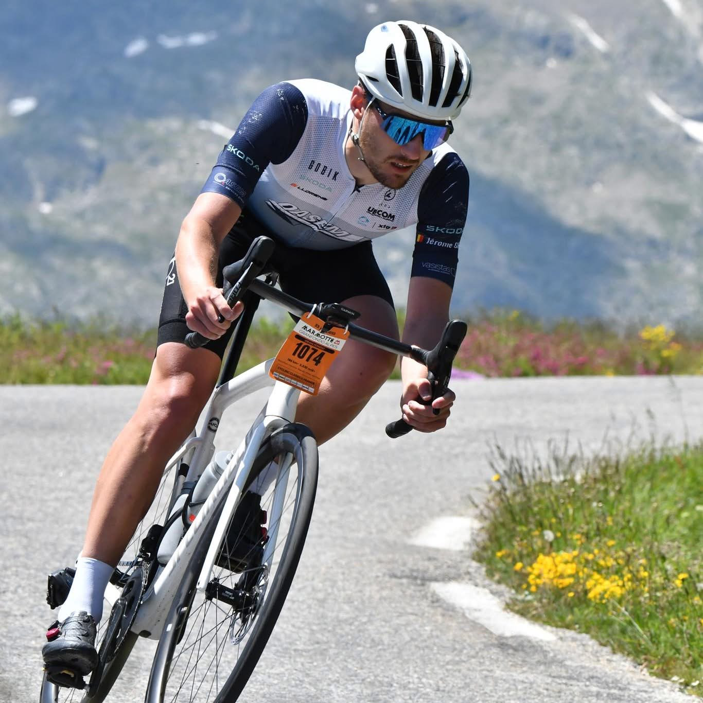
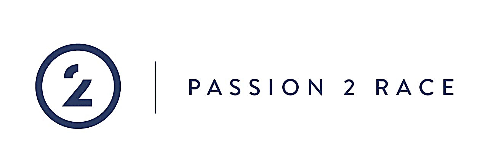
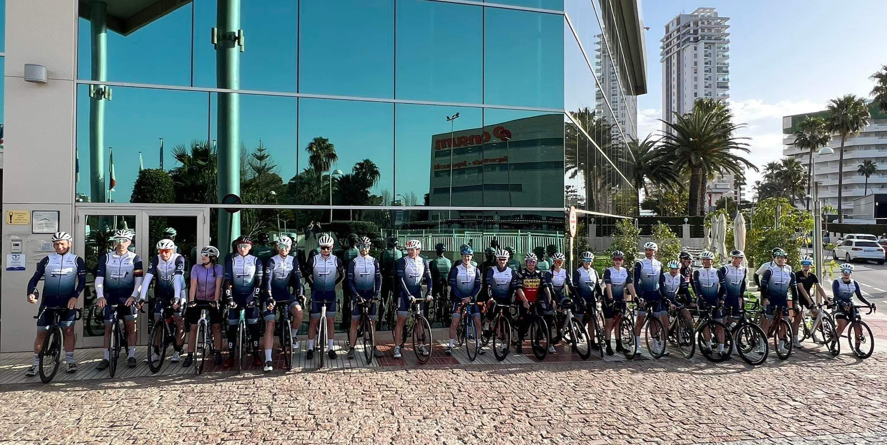
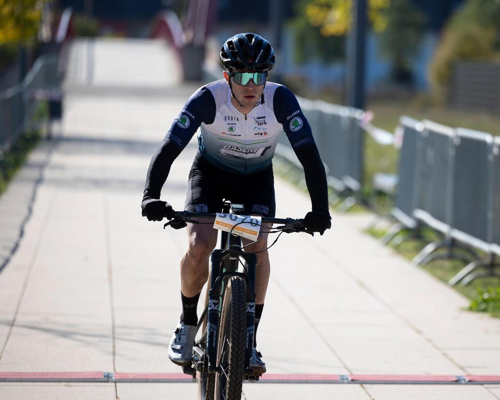
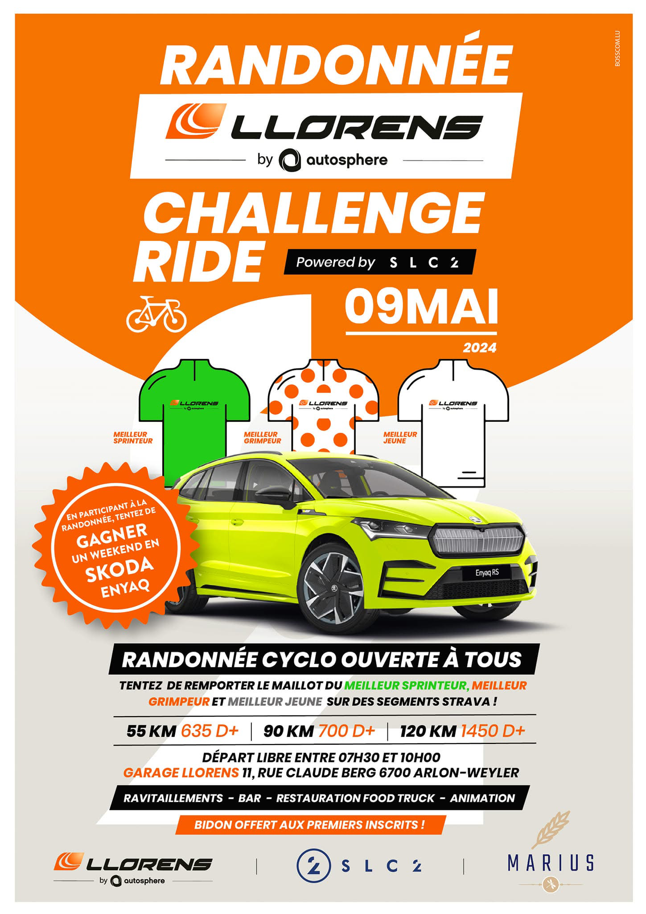

Fondé en 2005 par un groupe d’amis passionnés de cyclisme à Latour, le SLC Cycling Club ambitionne de promouvoir le vélo comme un mode de vie sain et convivial. Dès ses débuts, le club organise des randonnées locales qui attirent rapidement des membres de tous âges. Au fil des années, il s'engage dans des compétitions régionales, remportant des distinctions et se forgeant une solide réputation.
Entre 2018 et 2023, le club diversifie ses activités, offrant des ateliers de mécanique et des programmes de mentorat pour les jeunes. Aujourd’hui, avec plus de 200 membres, le SLC Cycling Club est devenu un pilier de la communauté, prônant un cyclisme durable et accessible à tous.



ACTIVITES
Le SLC Cycling Club propose des activités variées pour les passionnés de vélo, quel que soit leur niveau. Chaque semaine, des sorties permettent de découvrir la province de Luxembourg dans une ambiance conviviale.
Chaque année, un stage en Espagne offre un entraînement en milieu montagneux et des souvenirs inoubliables.
Enfin, le club s’engage auprès de la communauté à travers des événements caritatifs et des initiatives visant à promouvoir le cyclisme auprès des jeunes.
EVENEMENTS
Nous sommes ravis de vous présenter une série d'événements passionnants pour tous les amateurs de vélo. Rejoignez-nous pour participer à nos événements inoubliables:
Compétitions locales: Défiez vos amis et les autres membres du club lors de nos compétitions et courses de VTT, où la convivialité et l'esprit sportif sont à l'honneur.
Événements caritatifs: Participez à nos balades et courses caritatives, et contribuez à faire une différence dans notre communauté.
Journées de formation: Améliorez vos compétences et votre sécurité à vélo grâce à nos journées de formation, animées par des experts du cyclisme.


CONCOURS
Participez à la randonnée "Challenge Ride", organisée en partenariat avec Llorems by Q Autosphere et le SLC Cycling Club, le 9 mai 2024. Ouverte à tous les niveaux, cette randonnée propose trois parcours : 55 km avec 635 mètres de dénivelé, 90 km avec 700 mètres, et 120 km avec 1450 mètres.
Les départs auront lieu librement entre 7h30 et 10h00 depuis le garage Llorems, rue Claude Berg 6700 Arlon-Weyler. En plus des magnifiques paysages, vous pourrez gagner des maillots pour les meilleures performances dans des catégories comme meilleur sprinteur et meilleur grimpeur. Les premiers inscrits recevront un bidon en cadeau.
Ne manquez pas cette occasion de partager votre passion pour le cyclisme et de profiter d'un moment convivial et sportif !
CONTACT
Adresse:Parc d'activité économiques de Virton Latour 6761 Virton
Mail:slc-cycling-club@slc.eu
Tel:0032/472.84.96.26